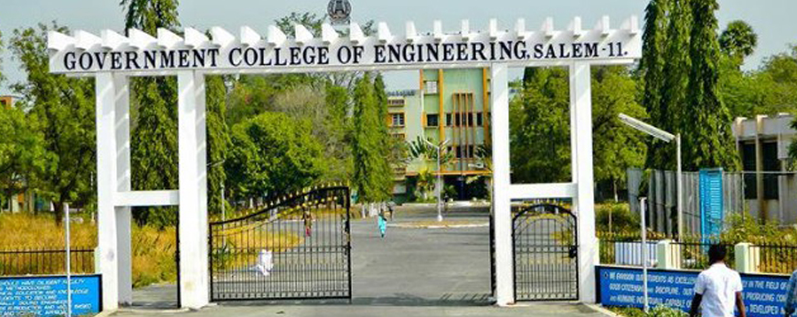

GCE SALEM

GCE SALEM

The Government College of Engineering, Salem in Salem, Tamil Nadu, India, is an engineering education center in the state of Tamil Nadu. It is one of the three institutions offering Metallurgical Engineering as a full-time course in Tamil Nadu. GCE-Salem was started during the Third Plan period in 1966 and is located on a beautiful site surrounded by hills. Its area is 1.62 square kilometres (400 acres). This is the third government engineering institution formed in Tamil Nadu. The first batch of students was selected for 1966 for courses in Civil Engineering, Mechanical Engineering and Electrical Engineering. In 1973 the metallurgical engineering branch was started. The Electronics Engineering and Communication Engineering branch was introduced in 1985. Computer science and engineering was started in 2001. All the undergraduate courses except Computer Science and Engineering are accredited by NBA. The Principal, Dr. R.S.D. Wahida Banu says: "A teacher affects eternity. No one can tell where his influence stops"
Mechanical Engineering
Electronics and Communication Engineering
Electrical and Electronics Engineering
Computer Science and Engineering
Metallurgical Engineering
Physics department
Chemistry
Mathematics
English
Physical Education
Library
Digital Library
Structural Engineering
CAD
Thermal Engineering
Power Electronics and Drives
Welding Technology

0427 - 2346157/2346102
gcesalem.edu@gmail.com/principal@gcesalem.edu.in
MAPS
The Government College of Engineering, Salem in Salem, Tamil Nadu, India, is an engineering education center in the state of Tamil Nadu. It is one of the three institutions offering Metallurgical Engineering as a full-time course in Tamil Nadu. GCE-Salem was started during the Third Plan period in 1966 and is located on a beautiful site surrounded by hills. Its area is 1.62 square kilometres (400 acres). This is the third government engineering institution formed in Tamil Nadu. The first batch of students was selected for 1966 for courses in Civil Engineering, Mechanical Engineering and Electrical Engineering. In 1973 the metallurgical engineering branch was started. The Electronics Engineering and Communication Engineering branch was introduced in 1985. Computer science and engineering was started in 2001. All the undergraduate courses except Computer Science and Engineering are accredited by NBA. The Principal, Dr. R.S.D. Wahida Banu says: "A teacher affects eternity. No one can tell where his influence stops"
Affiliations
The institute was affiliated to the University of Madras until 2001. After a brief affiliation with Periyar University, it was a constituent college of Anna University which is a statewide centralized engineering university. From the year of 2009, GCE salem has been promoted as one of the Autonomous Engineering Colleges in Tamil Nadu. The college is a Regional Centre for Anna University for Ph.D. and M.S., programmes. It is the zonal office for the conduct of Anna University Examinations in the 21 colleges belonging to this zone. The institution is one of the eleven technical institutions of Tamil Nadu selected for World Bank financial assistance under Technical Education Quality Improvement Programme (TEQIP). The institution has received an approval for a sum of Rs. 10.967 crores as lifetime allocation for the project implementation spread over a period of four years from 2003 to 2007.Buildings
The Administrative block or Main block is the capital of the College. The streams of Engineering have dedicated buildings. All the Engineering departments are equipped with technologies aided by funding from World Bank through Technical Education Quality Improvement Program (TEQIP). In TEQIP Phase II ( from 2011-2014), the institution has received Rs.12 crore for enhancing research activities.Admission
Admission to the institute is through single window counselling system of Anna University. Undergraduate students are selected based on competitive student rankings in higher secondary examination and then subjected to counselling. Postgraduate students are selected based on competitive rankings in Tamil Nadu Common Entrance Test (TANCET)courses offered:
Administrative Block
Civil EngineeringMechanical Engineering
Electronics and Communication Engineering
Electrical and Electronics Engineering
Computer Science and Engineering
Metallurgical Engineering
Physics department
Chemistry
Mathematics
English
Physical Education
Library
Digital Library
Master courses
Structural Engineering
CAD
Thermal Engineering
Power Electronics and Drives
Welding Technology
CONTACTS
0427 - 23461570427 - 2346157/2346102
gcesalem.edu@gmail.com/principal@gcesalem.edu.in